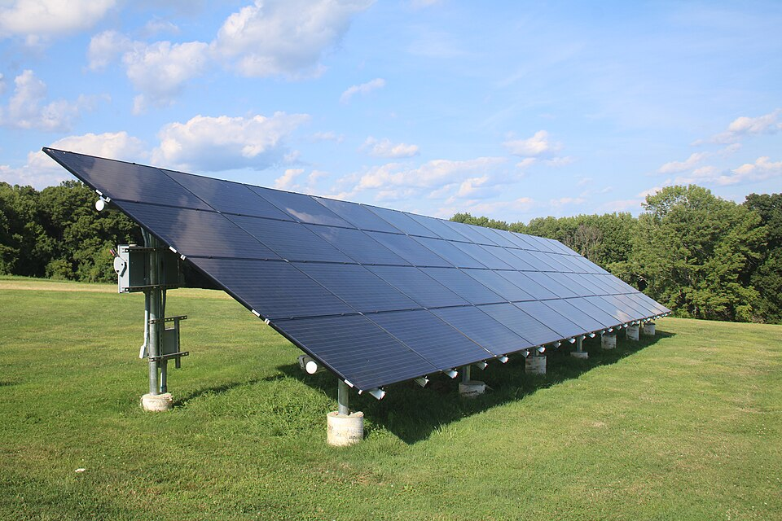

Panel view Live light balance from the two LDR sensors

Reference photo by Grendelkhan · CC BY-SA 4.0
Left LDR
Right LDR
Photo tilt follows the reported servo angle
Remote control Commands are validated, stored and answered with a reason
Enter the shared API key from your .env file. It is kept for this browser session only.
AUTO Lets the Controller follow the stronger Light source.
Direct moves are only accepted while the device is in MANUAL mode.
Samples Stored0
Orientation Events0
Commands Sent0
Commands Rejected0
Degrees Moved0°
Time in AUTO0s
Light Measurements Both LDR readings over time
Waiting for light sensor readings…
Orientation History Servo angle over time
Waiting for orientation history…
Command history Track requests sent to the device and their results
| # | Time | Type | Payload | Source | Status | Reason |
|---|
Orientation History Log Every Angle / Mode / Tracking-State Transition
| Time | Angle | Mode | State | Reason |
|---|
Fault Timeline Recorded Sensor-Fault Events
| Time | Angle | Mode | Fault |
|---|
Control Configuration Thresholds chosen for this build
Anti-oscillation: MedianFiltering → deadband → N Consecutive Agreeing Samples → Clamped Step →Settle Delay Defore the Next Decision.